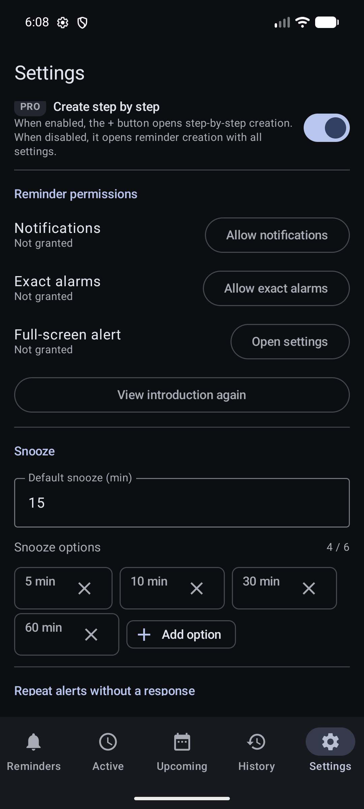

Початок роботи
Допоможіть телефону надійно показувати нагадування.
DKReminder може зберегти нагадування, навіть коли бракує системного доступу. Стани дозволів у Налаштуваннях показують, що ще потребує вашої уваги.

Що відбувається під час першого запуску
Короткий вступ знайомить із застосунком до створення першого нагадування. Сам по собі він не надає дозволів Android.
- Перегляньте вступ або пропустіть пояснювальні екрани.
- Створіть перше нагадування. DKReminder може провести вас через налаштування крок за кроком або одразу показати всі доступні параметри.
- Якщо бракує дозволу на сповіщення, DKReminder пояснить, навіщо він потрібен. Після вашої дії відкриється системний запит Android.
- Якщо бракує доступу до точних сигналів, після вашої дії відкриється відповідний екран налаштувань Android.
- Надайте доступ або поверніться в DKReminder, якщо хочете вирішити пізніше. Стан дозволів лишатиметься видимим у Налаштуваннях.
Дозволи для нагадувань
Відкрийте Налаштування → Дозволи для нагадувань у будь-який момент. Кожен рядок показує поточний стан і дію, яка відкриває потрібний запит або системний екран Android.
Дозволяють Android показувати сигнали DKReminder та дії в них.
Допомагають Android показувати важливі за часом сигнали ближче до вибраного часу.
Дозволяє відповідним сигналам відкриватися на весь екран, коли Android це допускає.
Сповіщення
Дозвіл на сповіщення дає телефону змогу показати сигнал, його звук або вібрацію та дії «Готово» чи «Відкласти».
- У DKReminder відкрийте Налаштування → Дозволи для нагадувань.
- Оберіть Дозволити сповіщення.
- Підтвердьте системний запит Android для DKReminder.
- Поверніться в застосунок і перевірте, що доступ надано.
Точні сигнали
Android може відкладати звичайну фонову роботу, щоб заощаджувати заряд. Доступ до точних сигналів дає DKReminder змогу точніше планувати важливі за часом сигнали.
- У DKReminder відкрийте Налаштування → Дозволи для нагадувань.
- Оберіть Дозволити точні сигнали.
- На екрані Android дозвольте DKReminder встановлювати точні сигнали.
- Не змінюйте інші параметри й поверніться до застосунку.
Повноекранний доступ
Повноекранний доступ дає відповідному нагадуванню змогу відкритися поверх екрана блокування, коли Android вважає такий показ доречним.
- У DKReminder відкрийте Налаштування → Дозволи для нагадувань.
- Оберіть Відкрити налаштування біля повноекранного доступу.
- На екрані Android змініть лише доступ до повноекранних сповіщень для DKReminder.
- Поверніться в застосунок і перевірте оновлений стан.
- На заблокованому телефоні нагадування з повноекранним режимом може відкритися на весь екран.
- Під час користування розблокованим телефоном Android зазвичай показує помітне сповіщення замість повного екрана.
- Якщо повноекранний показ недоступний, DKReminder використовує звичайне сповіщення.
- Тільки сповіщення не означає «без звуку»: звук і вібрація налаштовуються окремо.
Фонова робота й обмеження пристрою
DKReminder планує нагадування так, щоб вони з’являлися після закриття застосунку, і відновлює планування після перезапуску пристрою. Android та окремі виробники все одно можуть застосовувати режими енергозбереження або фонові обмеження, які затримують сигнали.
Якщо після оновлення системи або зміни енергозбереження сигнали стали ненадійними, спочатку перевірте сповіщення й точні сигнали. Потім перегляньте налаштування батареї або фонової роботи для DKReminder. Назви відрізняються між виробниками, тому змінюйте лише параметр, який явно обмежує фонову роботу DKReminder.
Якщо сигнал не з’явився
- Відкрийте DKReminder і переконайтеся, що нагадування збережене, не призупинене, не завершене й не в Кошику.
- Перевірте дату, час, часовий пояс, правило повторення та активне вікно.
- Відкрийте Налаштування → Дозволи для нагадувань і перевірте дозвіл на сповіщення.
- Якщо важлива точність часу, переконайтеся, що точні сигнали дозволені.
- Для повноекранного режиму врахуйте: Android може показати помітне сповіщення замість повного екрана.
- Перевірте фонові або батарейні обмеження DKReminder на телефоні.
- Створіть окреме разове тестове нагадування на кілька хвилин наперед. Не змінюйте початкове нагадування під час перевірки.
Пов’язані матеріали
Не знайшли відповідь?
Напишіть на reminder@dvkworks.com і вкажіть модель телефона, версію Android та що вже перевірили.